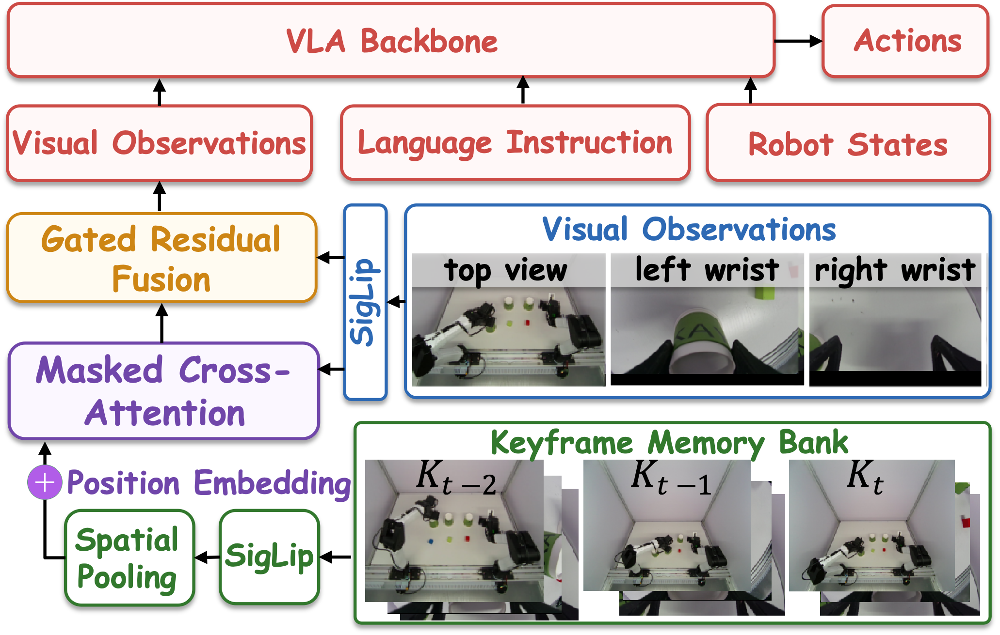

可以把「关节减速提名 → 冻结 DINOv2 去重 → 16 token/帧 的有序记忆注入 \(\pi_{0.5}\)」整段搬进自己的 VLA，六个真实双臂任务 TSR 从 27.8% 提到 51.4%；代价是三个检测超参按任务手调，峰值要等 20–60 帧确认窗结束才写入。
- 最小可复用件
- 运动学峰值检测器：\(S_{t} = 1/(1+\bar{\delta }_{t})\) 取局部极大，配视觉去重与不应期。纯本体信号，几十行代码，不依赖视觉模型。
- 主要风险
- 写入晚于阶段边界：峰值须经 20 或 60 帧确认才入 bank，抓取这类短阶段可能在确认期内已推进到下一步；减速作为唯一提名信号，对物体自行移动、接触滑动不敏感。
- 复现门槛
- YAM 类 6-DoF 双臂（主从各两条）+ 顶视与双腕共 3 路相机；每任务约 100–200 条遥操作示范；\(\pi_{0.5}\) 全量 SFT 30k 步、batch 32、\(2\times\mathrm{A100}\)。不需关键帧标注，但 \(w\)、峰值窗、不应期须按任务调。
1. 核心摘要
长程双臂操作难在阶段歧义：桌面画面可以完全相同，正确动作却取决于之前是否覆盖、移走或替换过某个物体。KEMO 不往上下文塞更多帧，而是从机器人自身运动找写入时机——关节在抓放前刻意减速，减速段的显著度峰值即候选；冻结 DINOv2 的全局图嵌入剔除与上一个关键帧过于相似的候选；剩下帧经 SigLIP 编码、\(4\times 4\) 池化成 16 token，按序存入容量 \(K\) 的库，以当前帧为 query 做 masked cross-attention，再经负偏置门控残差融回视觉表示。同一组索引复用为损失的高权重位置。判定：本专题最接近落地的一篇，检测器与策略解耦、无需关键帧标注；代价是超参按任务手调、写入带确认延迟、容量靠人工设定。
2. 事件流水线定位
候选生成与记忆写入是 on：论文既定义「何时值得成为候选」（因果峰值），也定义写入形态（每帧 16 token、有序、有上限、带 mask）。语义确认标 part：视觉去重只回答「与上一个关键帧是否够不一样」，用 DINOv2 全局嵌入的余弦距离，不判断语义。边界定位缺席——关键帧是瞬时帧，没有起止；检索也不成立，读出的固定是最近 \(K\) 条，无 query 匹配。下游假设是 \(\pi_{0.5}\) 这类 token 化 VLA，图像 patch token 可原位替换。
| 环节 | 内容 |
|---|---|
| 输入 | 3 路 RGB（顶视、左腕、右腕）+ 关节位置 \(q_{t}\) + 语言指令；在线只用 \(t\) 及以前。 |
| 输出 | 每步显著度 \(S_{t}\)；被接受的关键帧索引 \(k_{i}\) 及其 \(16\times D\) token 与时间位置编码。 |
| 交给下游 | 至多 \(K\) 条有序 memory token 与二值 padding mask，作为 cross-attention 的 K/V 注入视觉编码阶段。 |
3. 问题与动机
Markov 策略 \(\pi (a_{t}|o_{t}, \ell)\) 只看当前多相机图像与本体状态，信息上无法区分「杯子已被覆盖」与「尚未覆盖」。Cover Blocks 最直接：两阶段画面几乎一致，下一步该动的积木却不同。执行中的重试让问题更糟——轨迹被拉长，同一时刻可能落在与训练完全不同的阶段。
已有记忆双向失效：稠密保存必须持续压缩，压缩会冲淡决定进度的细节；只留最近若干帧则丢掉「哪个物体被放到哪里」。固定间隔采样把时间索引当任务进度，一次重试就让采样位置落到别的语义阶段——Cover Blocks 上均匀采样 12 次全败，最近帧只成功 1 次。
在线 VLM 分解子任务是另一条路，但每步额外推理，且错误沿控制链传播。关节运动免费、因果、不需要模型，适合作第一级提名；问题是停顿不等于状态变化，调整姿态、等夹爪闭合也会减速。KEMO 的两级门控就是为这个假阳性设计的：运动负责召回，外观负责否决。
4. 方法拆解

总体框架：机器人状态和视觉观测进入关键帧检测器，候选写入记忆库，经检索与门控融合后送入 VLA 主干输出关节动作；语言指令直接进入主干。
4.1 输入与时间表征
时刻 \(t\) 的观测为 \(o_{t} = {I_{t}, s_{t}}\)，\(I_{t}\) 含三路图像，\(s_{t}\) 为机器人状态；策略条件于语言 \(\ell\) 与记忆 \(M_{t}\)，预测 \(H = 50\) 的 action chunk，动作为关节空间：\(\pi _\theta (a_{t:t+H} | o_{t}, \ell, M_{t})\)。\(M_{t}\) 不是轨迹回放，而是截至 \(t\) 已接受关键帧的有序集合，编码「哪些阶段已完成」，与当前观测互补。论文不引入新时间戳输入，槽位自带可学习时间位置编码，表达「这是第几个被接受的阶段」，这与按固定间隔取帧有本质差别。
4.2 关键机制
运动学显著性。 状态量是关节位置向量 \(q_{t}\)。在长度 \(w\) 的滑窗上算平均关节位移 \(\bar{\delta }_{t} = (1/w) \sum_{i=0}^{w-1} \lVert q_{t-i} - q_{t-i-1}\rVert_{2}\)，再取 \(S_{t} = 1/(1+\bar{\delta }_{t})\)，取值在 0 到 1 之间，完全静止时为 1。候选不是超阈点而是 \(S_{t}\) 的局部极大值——论文不设绝对分数阈值，只要求峰值在随后短窗内被确认。窗口按任务取 \(w = 10 / 30 / 40\) 帧，确认窗取 20 或 60 帧：动作切换快的三个任务用 \(w = 10\)，长窗任务靠平均抵消单关节抖动。
视觉去重。 候选时刻 \(c_{i}\) 与上一个被接受的关键帧 \(k_{i-1}\)（不是上一帧）比较：\(v_{i} = 1 - \operatorname{cos}(\phi (I_{c_{i}}), \phi (I_{k_{i-1}}))\)，\(\phi \) 为冻结 DINOv2 的全局嵌入，\(v_{i} \gt \epsilon \) 才接受，\(\epsilon = 0.05\) 全任务共用。拒绝时参考帧不变，连续停顿不会互相刷新。之后加不应期 \(r = 8\) 帧；Drawer Items Replacement 取 60 帧，因其过渡更慢、误写代价更高。
记忆构造。 接受帧经 SigLIP（与 \(\pi_{0.5}\) 同源）编码为 256 patch，\(4\times 4\) 平均池化压到 16 token。第 \(i\) 槽叠加可学习时间位置编码 \(PE(i)\) 并广播到该帧 16 个 token。库容量为最近 \(K\) 条，不足时用最近关键帧填充并以二值 mask 屏蔽填充槽。论文称 \(K\) 按任务子阶段转移数设定，未公布取值。
注入方式。 当前帧 token \(X_{t}\) 作 query，\(K\) 槽投影拼接为 \(KV \in \mathbb{R}^{(K\cdot 16)\times D}\)，得 \(X'_{t} = CrossAttn(X_{t}, KV, mask)\)。输出不替换当前视觉，而走门控残差 \(\hat{X}_{t} = X_{t} + \sigma (g([X_{t}; X'_{t}])) \cdot X'_{t}\)，\(g\) 负偏置初始化，训练初期门近关闭以保持基座行为。\(\hat{X}_{t}\) 直接替换图像 token 进 LM，前缀长度与 LM 结构不变。
训练是否改主干。 改动只在视觉编码阶段的旁路与门控，LM 与动作头不动。\(\pi_{0.5}\) 不冻结，在示范上全量 SFT；参与检测的 DINOv2 冻结。损失复用同一组索引：\(min_{i} |t - k_{i}| \le \delta \) 时 \(w_{t} = \lambda \)，否则为 1；\(L = \sum_{t} w_{t} \ell_{t} / \sum_{t} w_{t}\)，\(\ell_{t}\) 是 horizon 上的 flow-matching 速度损失，\(\delta = 3\)，\(\lambda = 8.0\)。监督预算压在阶段转移附近，因为那里的误差会向后传。

关键帧检测：曲线表示 \(S_t\)，星标是接受的峰值；绿线对应保留帧，红线对应被视觉相似度过滤的候选帧。

记忆注入：下排记忆库 \(K_{t-2},K_{t-1},K_t\) 经 SigLIP、空间池化和位置编码后，与上排当前观测做 masked cross-attention 及门控残差融合。
4.3 输出与在线边界
因果性。 是因果的。\(S_{t}\) 只用 \([t-w, t]\) 的关节历史；峰值确认再看 20/60 帧，但只消费后续 \(S\) 值，不需要未来图像的语义，也不在历史帧上跑 VLA。记忆里只有 \(k_{i} \le t\) 的帧。
写入延迟。 延迟等于确认窗加不应期，以帧计为 20/60 加 8（Drawer 为 60 加 60）。控制帧率未在已核验的公开材料中确认，换算秒数不可靠，工程上应直接写成控制步数。若落库时间戳取确认时刻而非峰值时刻，记忆会整体晚于真实边界；论文未说明取哪个，此点未在已核验的公开材料中确认。
记忆长度上限。 上限是条数而非时长：最多 \(K\) 条、每条 16 token，额外上下文不超过 16K 个 token，与轨迹长度无关。超过 \(K\) 后旧帧被挤出，早期证据丢失；\(K\) 的具体数值与覆盖率均未公布。
写入不可撤销。 接受帧立即入 bank，没有复核、回滚或合并接口；去重只与最后一个接受帧比较，一次误接受会同时污染参考帧与记忆内容，误差沿后续阶段累积。
5. 证据与实验
平台为 YAM 双臂，两条 6-DoF 主臂遥操作采集、两条从臂自主执行，3 路相机（顶视、双腕）。六个任务都需按历史判阶段，每任务 2–6 个计分阶段、28–95 秒、830–2846 步，每方法每任务 12 次试验。
| 任务 | 计分阶段 | 示范条数 | 平均时长 | 平均步数 |
|---|---|---|---|---|
| Swap Foods | 2 | 约 100 | 28 s | 830 |
| Find Block | 4 | 约 160 | 40 s | 1186 |
| Cover Blocks | 6 | 约 200 | 50 s | 1480 |
| Box Refill | 4 | 约 150 | 50 s | 1480 |
| Make Sandwich | 4 | 约 100 | 54 s | 1616 |
| Drawer Items Replacement | 4 | 约 120 | 95 s | 2846 |
TSR 要求全部阶段按序完成；SCR 只统计从开头起连续完成的阶段平均数，失败后不计，反映首次失败前推进到哪。变化为相对无记忆 \(\pi_{0.5}\) 的百分点差。
| 聚合指标（六任务） | \(\pi_{0.5}\) | MemoryVLA | KEMO | 相对 \(\pi_{0.5}\) |
|---|---|---|---|---|
| TSR | 27.8% | 1.4% | 51.4% | +23.6 |
| SCR | 42.3% | 未在摘要处汇总 | 76.4% | +34.1 |
MemoryVLA 的 1.4% 是关键对照：它有记忆与长程上下文却几乎完不成任务，说明「加记忆」本身不产生收益，选什么历史、如何融合、训练是否覆盖转移时刻才是变量。作者也报告 Drawer Items Replacement 仍未取得完整成功。
| Cover Blocks 配置 | TSR | SCR（满分 6） |
|---|---|---|
| 均匀采样 | 0/12 | 1.833 |
| 最近帧 | 1/12 | 0.700 |
| 事件关键帧（去掉损失加权） | 3/12 | 2.500 |
| 去掉门控融合 | 0/12 | 0.000 |
| 完整 KEMO | 9/12 | 5.250 |
前两行隔离选帧规则：门控与容量不变，仅换成事件帧就把 TSR 从 0/12 拉到 3/12。后两行读模块：去掉门控融合后 TSR 与 SCR 双双归零，说明直接相加会让历史压过当前观测，策略连第一阶段都推不动；去掉损失加权仍到 3/12，说明记忆有效、缺的是转移附近的动作精度。证据边界要说明：6 个任务、每任务 12 次真机试验，样本量小，单任务差异易受初始位形影响，论文未报告多种子方差。
6. 优点、局限与 VLA 适配
可迁移
检测器完全在策略之外：只吃关节位置，不需训练与标注，不与 VLA 版本耦合，可整体搬到任何位置控制手臂。写入成本可控，每帧 16 token，容量按条数计。门控残差加负偏置初始化保证改造初期不退化，这比融合结构本身更重要。同一索引同时决定记忆内容与损失权重，检测精度可从训练曲线直接读出。
不成立的前提
减速假设依赖操作者在转移前刻意放慢，这在遥操作、位置控制、关节空间动作下成立；换成速度控制、第一视角视频或高频闭环时，减速段会被平滑掉。视觉去重只看全局嵌入，对局部关系变化、遮挡、机械臂挡住相机都不敏感。\(K\) 需预先知道子阶段数，任务变长要重设；三个超参按任务手调，跨任务没有自动化方案。
延迟要按控制周期算，而非视频帧率：确认窗 20 帧可能已覆盖整个抓取阶段，写下的记忆描述「刚刚完成」，策略需要的是「正在进行」。最小改造是把确认窗缩到 5–8 个控制步，并把落库时间戳改回峰值时刻，代价是假阳性上升，需用夹爪开合、接触力或末端速度过零补第二确认。记忆侧先不换结构，固定 \(K\) 等于阶段数、确认增益后再谈自适应容量。
7. 落地清单
- 只搬运动学峰值检测器：按自己的控制频率重算 \(w\)，用局部极大加不应期出候选，先在离线回放上量它与人工阶段边界的时间偏差。
- 把峰值确认窗从帧数改成控制步数，为每个关键帧单独记录确认延迟，落库时间戳取峰值时刻而非确认时刻。
- 用冻结 DINOv2 全局嵌入做去重，\(\epsilon \) 从 0.05 起扫，并联一个夹爪开合或接触信号作为第二确认，降低对单一视觉判据的依赖。
- 记忆侧只实现 \(4\times 4\) 池化的 16 token/帧 与 padding mask，先令 \(K\) 等于任务阶段数，做 K 增减的敏感性测试后再考虑动态容量。
- 复现训练侧时先关掉损失加权跑一遍，确认增益来自记忆而非监督重分配，再开 \(\lambda = 8.0\)、\(\delta = 3\)。
相关页面：层级事件记忆 · 写入预算与合并 · FlowGEBD · 边界检测 · CAG-QIL · 因果事件记忆 · 返回总站